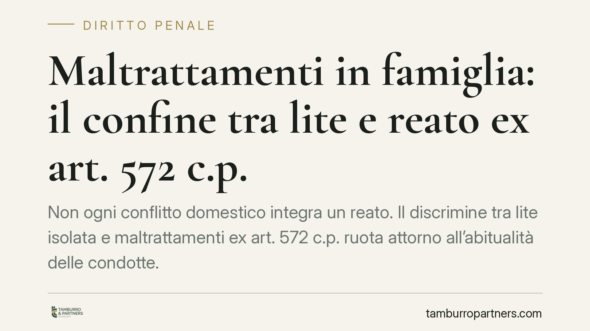

Maltrattamenti in famiglia: il confine tra lite e reato ex art. 572 c.p.
Non ogni conflitto domestico integra un reato. Il discrimine tra lite isolata e maltrattamenti ex art. 572 c.p. ruota attorno all'abitualità delle condotte. Due profili restano centrali: la reciprocità delle aggressioni non funziona come scusante e la presenza di minori richiede prova rigorosa. Vediamo cosa significa, in concreto, per vittime e accusati.

Inquadramento normativo
Il reato di maltrattamenti contro familiari e conviventi è disciplinato dall'art. 572 del codice penale, che punisce chi "maltratta una persona della famiglia o comunque convivente". L'elemento che distingue questa fattispecie dal singolo episodio di violenza o di ingiuria è l'abitualità: la norma presuppone una pluralità di condotte vessatorie, reiterate nel tempo, che creano un clima di sopraffazione e sofferenza per la vittima.
Non basta quindi una lite, per quanto accesa, né un singolo gesto violento. Occorre una serie di atti — fisici o morali — che, considerati nel loro insieme, configurino un sistema di vita improntato alla prevaricazione. Il singolo episodio, isolato, può semmai integrare reati diversi (percosse, lesioni, minaccia ex art. 612 c.p., ingiuria depenalizzata), ma non i maltrattamenti.
L'art. 572 c.p. prevede inoltre un trattamento sanzionatorio aggravato quando il fatto è commesso in presenza o in danno di persona minore, di donna in stato di gravidanza o di persona con disabilità. Si tratta di una circostanza aggravante tipizzata dalla stessa norma, non di una generica valutazione rimessa al giudice: la sua contestazione richiede un fondamento probatorio specifico.
Il requisito dell'abitualità
Il punto più delicato, nella pratica dei procedimenti, è proprio la ricostruzione dell'abitualità. La giurisprudenza, in modo ormai consolidato, richiede che le condotte siano tali da rendere penosa e intollerabile la convivenza, al di là del singolo episodio. Il giudice deve quindi verificare se esista un disegno vessatorio continuativo oppure una conflittualità episodica, per quanto intensa.
Questa distinzione non è teorica. Separa chi vive una situazione di abuso sistematico da chi attraversa una crisi familiare fatta di scontri reciproci. Nel primo caso si è di fronte a un reato; nel secondo, spesso, a una patologia relazionale che il diritto penale non intercetta direttamente.
La reciprocità non è una scusante
Un principio costante merita di essere ribadito: il fatto che anche la vittima abbia reagito, o che vi siano stati scambi di offese e aggressioni, non esclude di per sé il reato di maltrattamenti. La cosiddetta reciprocità delle condotte non funziona come scusante automatica.
Ciò che conta è verificare se, al di là delle reazioni della persona offesa, esista una posizione di sopraffazione stabile di un soggetto sull'altro. La difesa fondata sul "litigavamo entrambi" va quindi maneggiata con cautela: non è risolutiva e, se mal impostata, può rivelarsi controproducente. Resta, al contempo, uno spazio difensivo reale quando il quadro probatorio descrive un conflitto paritario e non una relazione di dominio.
Implicazioni pratiche
Per chi subisce le condotte. La qualificazione come maltrattamenti dipende dalla capacità di documentare la continuità degli episodi, non solo l'ultimo in ordine di tempo. Un singolo referto, da solo, raramente basta a ricostruire l'abitualità.
Per chi è accusato. La contestazione dell'art. 572 c.p. è grave e produce effetti immediati, anche cautelari (allontanamento dalla casa familiare, divieto di avvicinamento). La linea difensiva va costruita sul terreno dell'abitualità e della reale natura del rapporto, evitando difese di comodo basate solo sulla reciprocità.
La posta in gioco riguarda spesso, in parallelo, anche i procedimenti civili sulla separazione e sull'affidamento dei figli: le valutazioni penali e quelle familiari si influenzano reciprocamente.
Cosa fare in concreto
- Conserva ogni traccia documentale: referti medici, certificati di pronto soccorso, messaggi, registrazioni lecite, annotazioni datate degli episodi.
- Individua possibili testimoni — familiari, vicini, operatori scolastici o sanitari — e verifica cosa possono riferire direttamente.
- Non affidarti a un singolo episodio: ricostruisci la sequenza temporale completa delle condotte, perché è l'insieme che rileva.
- Valuta con attenzione il profilo dei minori: la loro presenza incide sull'aggravante e va trattata con rigore probatorio, non per supposizioni.
- Richiedi una valutazione tecnica tempestiva della posizione, considerato l'intreccio tra procedimento penale e cause di famiglia.
---
Contributo informativo a cura di Tamburro & Partners — Avv. Giuseppe Tamburro. Non costituisce parere legale.
Ogni condominio ha una storia a sé.
Se gestisci un'amministrazione e vuoi un confronto su una specifica questione condominiale, scrivi allo studio. Ti rispondiamo entro un giorno lavorativo.